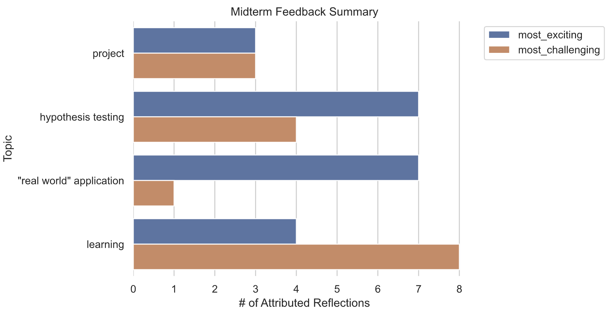

metacognition
In my classes, I do not grade students in the traditional sense. Instead, I use feedback as a means to communicate areas of improvement for each student. This means that a crucial element of my classes needs to be the importance I place on students’ metacognition, or their ability to monitor and regulate their own learning. In particular, I use two such tools:
- weekly metacognitive reports
- three metacognitive reflections (per term)
Both of these are equally valuable for both myself and the student, and together, they cover the planning, monitoring, and evaluating stages of the metacognitive cycle, as described by the Sweetland Center for Writing at the University of Michigan. Further, and maybe more importantly, they help to integrate each student’s learning experience with their sense of Self (Lin 2001); something that is integral to my teaching philosophy.
metacognitive reports
The main purpose of the metacognitive report is to give students a regular “check-in” with their learning as it pertains to the topics of the week. The idea is: by requiring students to complete these surveys, (a) students are forced to think about their learning in a metacognitive way, each week, and (b) I can collect data on how students are faring on a regular basis.
Below are questions I’ll use for weekly metacognitive reports. Students respond to these every time they submit their “main” weekly assignment.
- Explain what learning method worked best for you this week, and give an example for evidence of this. Share the concept you were learning, what you were doing, and explain what finally made it click. Think about moments where you might have thought to yourself “Ah hah!” or “Eureka, I’ve got it!”.
- Think about the learning activities you did this week (e.g., taking notes while watching lecture, working through an exercise in a certain way, listening to music while you work, etc.). Give an example of a specific learning activity that was LEAST helpful in improving your knowledge. What other learning strategies1 might work better for this in the future? What could you do differently?
- Upload a drawing or diagram that illustrates connections between concepts you’ve learned this week to concepts you learned in previous weeks (or even before this class!). Lucidchart provides some ideas for how to think about a concept map, but please feel free to make this your own! It’s important that this map makes sense to you.2
- Refer to the EMRN rubric. What letter would you assign your most recent submission? 3
- Explain why you chose the letter evaluation you did.
- How would you say your learning is progressing this week?
- red = completely lost
- yellow = recognizable gaps in my understanding
- green = confident enough to help another student
Of course, if their submission is marked with an “R”, or “Revision Needed”, then they’ll be given an opportunity for resubmission. For resubmissions, they respond to the following questions:
- Explain what changed in your understanding that merits a new letter evaluation. For example, explain what you got wrong and why you believe you got it wrong.
- What part of this revision was most beneficial for your learning, and why do you feel that way?4
metacognitive self-reflections
If the metacognitive reports are meant to check in with student learning as it pertains to weekly material, the self-reflections are meant to document how learning has progressed throughout the course. In particular, the metacognitive self-reflections are the main mechanism used to determine what a student’s final grade5 will be.
Initial Self-Reflection:
The initial self-reflection is meant to set a benchmark for student understanding at the beginning of the course. Comparing the other two self-reflections to this one provides a bit of insight into what was gained “so far”. This is also administered as a graded survey in Canvas, and it includes the following questions:
- For which of the following learning goals do you feel confident enough to explain to a novice in a creative way?6
- What are you most excited to learn in this class, and why?
- What about this class do you think will pose the greatest challenge for you? What are you concerned about Please be specific, and give examples if you can.
- Describe what it should mean for you to earn a final grade of A, A-, B+, B, or B-.
- You must at least define the grades A and B, but you can include others as you like. Your final grade for the class will be determined using the grade definitions you provide.
- These definitions must be reasonable. If a definition does not relate directly to your learning, you may be asked to rewrite it.
- Keep in mind that we do not have point values in this class. Refer to the syllabus for more on this …
- Is there anything you think the instructor should know about your life or your learning before we start the semester?7
Midterm Self-Reflection:
The main purpose of the midterm self-reflection is to check in with students on how they are feeling about their learning as a whole so far in the class. It also forces students to take stock of what they’ve learned, how they’ve learned it, and what they need to focus on before the semester is through. This survey consists of the following questions:
- For which of the following learning goals do you feel confident enough to explain to a novice in a creative way?8
- What have been the MOST EXCITING (or rewarding) learning experiences you’ve had so far in this class? Please give at least one example.
- What have been the MOST CHALLENGING learning experiences you’ve had so far in this class? Please give at least one example.
- Based on your definition of final grades in your Initial Self-reflection, what grade would you give yourself in the class thus far?9
- Explain how are you are meeting the corresponding grade criteria from your Initial Self-Reflection; use examples. Note: You’ll need to cite/quote the definition(s) from your Initial Self-Reflection here …10
- Is there anything you think the instructor should know about your life or your learning before we continue with the rest of the semester? Feel free to ask questions about your work, share concerns, or request a 1-1 meeting with the instructor if needed.
Final Self-Reflection:
The final self-reflection is the very last thing students will do in my class. It is meant to document a culmination in their learning the subject matter of the course. Students will propose their final grade in the class, and they will also take stock of their progress since the initial self-reflection. This survey contains the following questions:
- Reflect on all the work you did in this class: weekly assignments and their feedback, lecture discussion, your final project, the feedback you gave a peer on their project, and your metacognitive reports. What stands out to you as work that you are especially proud of? In other words, what did you learn that you would feel excited to share with others? Feel free to share links to work as you like.
- Reflect on the more challenging aspects of this class, and consider the topics you were particularly interested in learning this semester. What gaps are there in your understanding? That is, what could you revisit in the future to improve your knowledge? Note: you should reference your weekly assignment submissions and your project. Consider the times you were asked to Revise your work.
- Based on your definition of final grades in your Initial Self-reflection, what would you like to give yourself as a final grade in the class?
- Explain how you met the corresponding grade criteria from your Initial Self-Reflection; use examples. Note: You’ll need to cite/quote the definition(s) from your Initial Self-Reflection here …
- What advice would you like to share with next semester’s students in this class? E.g., think about what you wish you knew, or what you think would be helpful for them.11
responding
Of course, an important part of the metacognitive process is closing the loop with the students. That is, they share their thoughts, and I need to respond to those thoughts. I do so using weekly reports and self-reflection review.
weekly reports
I do not respond to every metacognitive report. These are weekly, and there are a lot of students, so of course, responding to every one would be a pretty cumbersome task. Instead, I ask teaching assistants (TAs) to review these, and let me know if they see anything egregious (e.g., a student who is especially struggling). In these cases, the metacognitive report acts as an indicator of students who need extra help.
Tools like ChatGPT are helpful for summarizing the responses each week, and the results can be shared with students. Sharing a summary of the weekly metacognitive reports can give students an idea for what sorts of misconceptions are common, and they can guide students toward concepts that might be worth reviewing (Drew 2020).
self-reflection review
Also unlike the metacognitive reports, I will read all the self-reflections. Self-reflections are essentially the analogue for the course grade, and they are an important opportunity for me to interface with each student. At the beginning, I get an idea for what is important for each student, and I’ll call this out in my response. In the middle of the semester, I can help a student course-correct, if needed. And, at the end, I will use what the student writes to assign a final grade in the university system. If I disagree with a student’s final evaluation, I will reach out to them, and we’ll discuss via a one-on-one meeting.
Similarly, the tool mentioned above should apply to metacognitive self-reflections as well.
That said, like the metacognitive reports, I will share an (anonymized) summary of the responses. For example, here is a chart I shared with my statistics class in Spring 2025, outlining the topics that were apparently most exciting and challenging to students:

With this, students can decide how their “challenging” compares to the rest of the class.
orientation
For the most part, metacognitive thinking is pretty new to students. So, it’s important to orient them to the idea, giving them a sort of “training” on how to do it. At the beginning of the semester, I’ll walk through the above surveys, giving them examples for what might be a decent response to each question. I believe that the more they do these reports and reflections, the more accustomed to the idea they will be.
I’ll also note that for the first survey submissions, TAs and I often provide feedback to students, suggesting improved ways they could respond.
References
Footnotes
The hope is that by providing these learning strategies, students might “take the hint” and try some out on their own!↩︎
A crucial element of metacognitive thinking is identifying the connections between current knowledge and past knowledge. This needs only to make sense to the student, as their mind is different from everyone else’s. Concept mapping has been shown to be a valuable tool to accomplish this (Joshi et al. 2022). I only recommend Lucidchart as an option for students, but their own personal drawings are just as good.↩︎
Note: this should be a multiple choice question; it makes it easier to analyze later.↩︎
To be clear, this grade only encodes a student’s performance in the class insofar as their own personal evaluation deems it to. I do not assign grades based on assignment scores, rather, I allow the student to choose their grade based on their own evaluation of their work. For more on this, see the ungrading section.↩︎
This then lists the learning objectives for the class in multiple selection boxes.↩︎
Something nice about this question is it shows the importance I place on the balance between life and learning. It also helps to create the kind of supportive social environment suggested by Lin (2001).↩︎
Again, the course learning objectives are listed here. When compared to the responses from the initial self-reflection, students (and the instructor) can see their progress!↩︎
Of course, this is a multiple choice question, presenting the typical +/- letter grades.↩︎
This is such an important question. It forces the students to measure their learning as dictated by their grading system.↩︎
This question is a result of a suggestion from a colleague, and I really like the idea. Not only does it force students to think back on the class, and evaluate what they benefit from when it comes to their learning, but it also gives the next cohort some friendly peer advice!↩︎